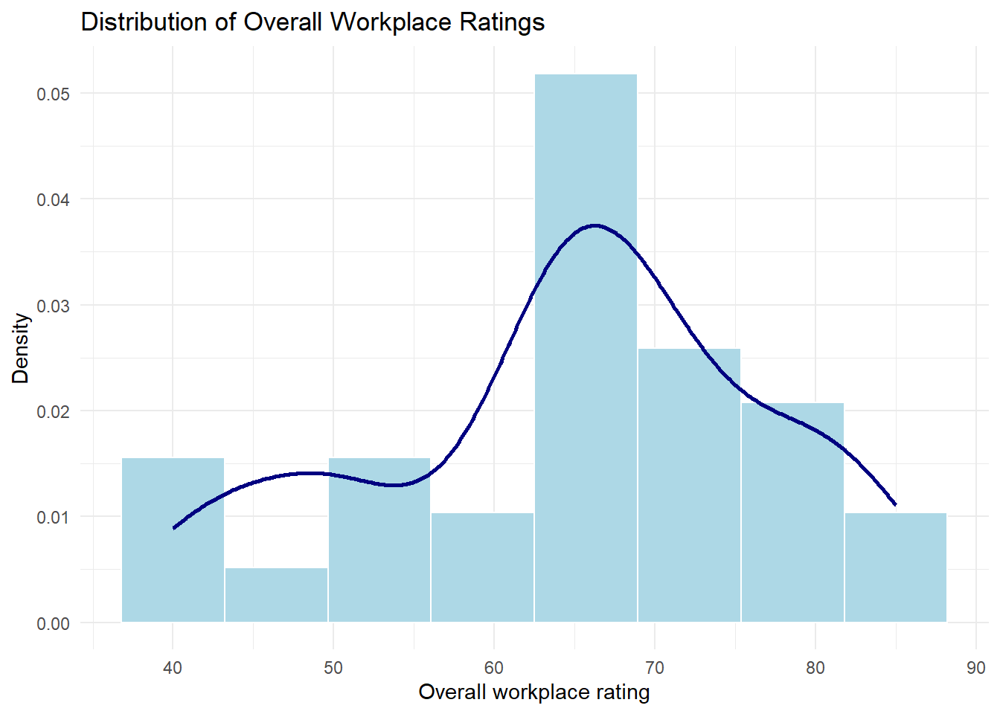
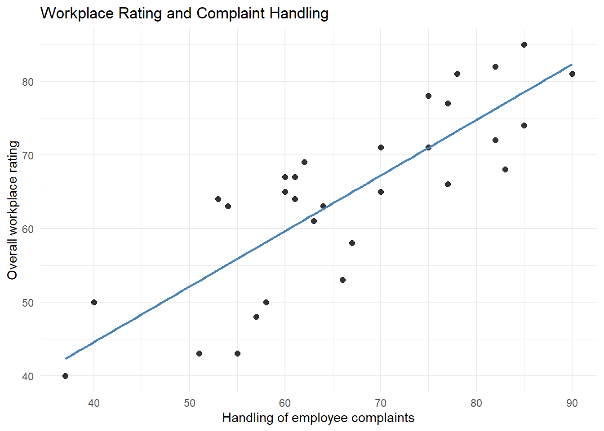
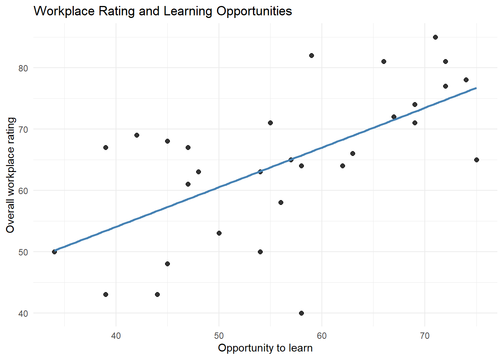
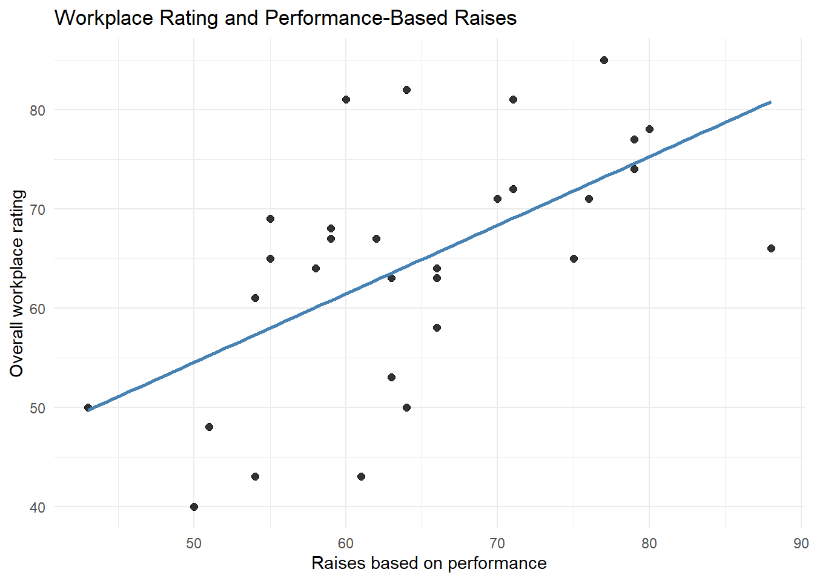
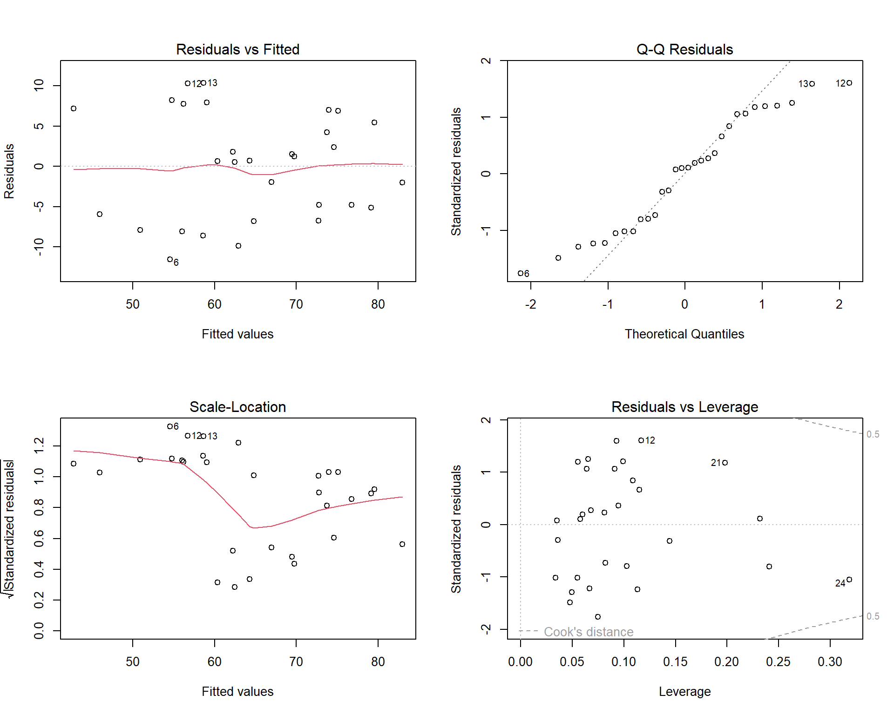

library(dplyr)
library(tidyr)
library(ggplot2)
library(broom)
library(performance)
library(gt)Lab 3: Linear Regression — Model Specification, Comparison, and Interpretation
Introduction
This report investigates factors associated with employee ratings of their workplace. I will estimate and compare competing linear regression models, evaluate model diagnostics, and interpret the results of a preferred model.
Data
data("attitude", package = "datasets")
analysis_data <- attitude |>
dplyr::select(rating, complaints, learning, raises)The analysis uses the built-in R dataset attitude. The analysis dataset has 30 departments and four variables: overall workplace rating (rating), handling of employee complaints (complaints), opportunity to learn (learning), and raises based on performance (raises). The scores represent department-level percentages of favourable employee responses. So, each observation represents a department instead of an individual employee.
Exploratory Data Analysis
Descriptive statistics
Descriptive statistics
descriptive_stats <- analysis_data |>
pivot_longer(
cols = everything(),
names_to = "Variable",
values_to = "Score"
) |>
group_by(Variable) |>
summarise(
Mean = mean(Score),
SD = sd(Score),
Minimum = min(Score),
Maximum = max(Score),
.groups = "drop"
)
descriptive_stats |>
gt() |>
tab_header(
title = "Descriptive Statistics",
subtitle = "Department-level workplace attitude scores (n = 30)"
) |>
cols_label(
SD = "Standard deviation"
) |>
fmt_number(
columns = c(Mean, SD, Minimum, Maximum),
decimals = 2
)| Descriptive Statistics | ||||
| Department-level workplace attitude scores (n = 30) | ||||
| Variable | Mean | Standard deviation | Minimum | Maximum |
|---|---|---|---|---|
| complaints | 66.60 | 13.31 | 37.00 | 90.00 |
| learning | 56.37 | 11.74 | 34.00 | 75.00 |
| raises | 64.63 | 10.40 | 43.00 | 88.00 |
| rating | 64.63 | 12.17 | 40.00 | 85.00 |
Distribution of workplace ratings
ggplot(analysis_data, aes(x = rating)) +
geom_histogram(
aes(y = after_stat(density)),
bins = 8,
fill = "lightblue",
color = "white"
) +
geom_density(
color = "navy",
linewidth = 1
) +
labs(
title = "Distribution of Overall Workplace Ratings",
x = "Overall workplace rating",
y = "Density"
) +
theme_minimal()
Relationships between ratings and predictors
ggplot(analysis_data, aes(x = complaints, y = rating)) +
geom_point(size = 2, alpha = 0.8) +
geom_smooth(
method = "lm",
formula = y ~ x,
se = FALSE,
color = "steelblue"
) +
labs(
title = "Workplace Rating and Complaint Handling",
x = "Handling of employee complaints",
y = "Overall workplace rating"
) +
theme_minimal()
ggplot(analysis_data, aes(x = learning, y = rating)) +
geom_point(size = 2, alpha = 0.8) +
geom_smooth(
method = "lm",
formula = y ~ x,
se = FALSE,
color = "steelblue"
) +
labs(
title = "Workplace Rating and Learning Opportunities",
x = "Opportunity to learn",
y = "Overall workplace rating"
) +
theme_minimal()
ggplot(analysis_data, aes(x = raises, y = rating)) +
geom_point(size = 2, alpha = 0.8) +
geom_smooth(
method = "lm",
formula = y ~ x,
se = FALSE,
color = "steelblue"
) +
labs(
title = "Workplace Rating and Performance-Based Raises",
x = "Raises based on performance",
y = "Overall workplace rating"
) +
theme_minimal()
Summary of exploratory findings
Overall workplace ratings averaged 64.63 (SD = 12.17), ranging from 40 to 85 across the 30 departments. The histogram shows a main concentration of ratings around the mid-60s, with a tail extending toward lower ratings. All three predictors show positive associations with overall workplace rating. Complaint handling has the clearest approximately linear relationship, whereas learning opportunities and performance-based raises show more scatter around their fitted lines. There is no obvious strong curvature in these plots. Thus, linear relationships is a reasonable starting point. Some departments lie far away from the fitted lines, such as one with a learning score near 58 and an overall rating of 40. During regression diagnostics, we would need to pay closer attention to these observations. The positive associations are consistent with the expectation that more favorable views of complaint handling, learning opportunities, and performance-based raises accompany higher overall workplace ratings. Importantly, these department-level associations do not establish causation. ## Model Specification ### Predictions
I expect that more favorable views of complaint handling will be associated with higher overall workplace ratings because responsive and fair handling of concerns may contribute to employees feeling heard and supported. In addition, also predict that learning opportunities will explain additional variation in workplace ratings beyond complaint handling, since professional development represents a distinct aspect of the workplace experience. Finally, I expect more favorable views of performance-based raises to explain further variation after accounting for complaint handling and learning opportunities, because recognition and perceived fairness in compensation could contribute to overall workplace evaluations. These expectations align with a sequence of models that begins with complaint handling, adds learning opportunities, and then adds performance-based raises. We will evaluate whether adding more predictors, such as pay, increases the fit of the model empirically.
Competing regression models
I estimate four nested models, starting with an intercept-only baseline and then adding complaint handling, learning opportunities, and performance-based raises in this order.
# M0: Intercept-only baseline
model_0 <- lm(
rating ~ 1,
data = analysis_data
)
# M1: Complaint handling
model_1 <- lm(
rating ~ complaints,
data = analysis_data
)
# M2: Complaint handling and learning opportunities
model_2 <- lm(
rating ~ complaints + learning,
data = analysis_data
)
# M3: Complaint handling, learning opportunities, and raises
model_3 <- lm(
rating ~ complaints + learning + raises,
data = analysis_data
)Interpretation of the complaints coefficient
In M1, the complaints coefficient represents the expected difference in overall workplace rating associated with a one-point increase in the complaint-handling score, without adjusting for learning opportunities or raises. In this case it’s a 0.755 increase in predicted overall workplace rating score per one unit increase in the complaint-handling score. In M2, it represents the same association while holding learning opportunities constant. For this case, an estimated increase of 0.644 is expected when learning opportunities is held constant, being a lower increase compared to the slope in the M1 model. In M3, it represents the association while holding both learning opportunities and performance-based raises constant. In this model, the estimate remains close to previous models at 0.653 when both learning opportunities and performance-based raises are held constant. So, the interpretation changes from an unadjusted association in M1 to an association adjusted for the other included predictors in M2 and M3. Changes in the estimated coefficient across models reflect how the complaints–rating association differs after accounting for these additional workplace characteristics. The fact that the complaints coefficient gets reduced after adding learning suggests that the estimated complaints-rating association is partly shared with learning opportunities, while adding raises changes the coefficient little by comparison. It is important to note that while complaint handling stays positively correlated with overall workplace rating in all three models, these associations do not establish a causal effect. ## Model Comparison ### Nested-model F-tests
# Compare all four models in the required order
anova_results <- anova(model_0, model_1, model_2, model_3)
# Retain and rename the required statistics
nested_tests <- anova_results |>
as.data.frame() |>
dplyr::select(Res.Df, Df, F, `Pr(>F)`) |>
dplyr::rename(
residual_df = Res.Df,
change_df = Df,
f_statistic = F,
p_value = `Pr(>F)`
) |>
dplyr::mutate(
Model = c("M0", "M1", "M2", "M3"),
Comparison = c(
"Baseline",
"M1 vs M0: Add complaints",
"M2 vs M1: Add learning",
"M3 vs M2: Add raises"
),
.before = 1
)
nested_tests Model Comparison residual_df change_df f_statistic p_value
1 M0 Baseline 29 NA NA NA
2 M1 M1 vs M0: Add complaints 28 1 60.72560389 2.883919e-08
3 M2 M2 vs M1: Add learning 27 1 2.37986580 1.349930e-01
4 M3 M3 vs M2: Add raises 26 1 0.02463664 8.764884e-01The nested-model F-tests show that adding complaint handling significantly improves model fit compared to the intercept-only model (F = 60.73, p < .001). Adding learning opportunities does not provide a statistically significant improvement beyond complaint handling (F = 2.38, p = .135).Moreover, adding performance-based raises does not significantly improve fit beyond complaints and learning (F = 0.025, p = .876). These tests support complaint handling as an important predictor but provide insufficient evidence that learning or raises contributes additional explanatory value in this sequence of models.After considering the remaining performance measures and regression diagnostics, I will select a preferred model.
Model-level performance statistics
# Extract one row of model-level statistics per model
model_performance <- bind_rows(
M0 = broom::glance(model_0),
M1 = broom::glance(model_1),
M2 = broom::glance(model_2),
M3 = broom::glance(model_3),
.id = "Model"
)
# Calculate RMSE directly from each model's residuals
model_performance <- model_performance |>
mutate(
RMSE = c(
sqrt(mean(residuals(model_0)^2)),
sqrt(mean(residuals(model_1)^2)),
sqrt(mean(residuals(model_2)^2)),
sqrt(mean(residuals(model_3)^2))
)
) |>
dplyr::select(Model, r.squared, adj.r.squared, RMSE) |>
dplyr::rename(
r_squared = r.squared,
adjusted_r_squared = adj.r.squared
)
model_performance# A tibble: 4 × 4
Model r_squared adjusted_r_squared RMSE
<chr> <dbl> <dbl> <dbl>
1 M0 0 0 12.0
2 M1 0.681 0.670 6.76
3 M2 0.708 0.686 6.47
4 M3 0.708 0.675 6.46Changes in explained variance
model_performance <- model_performance |>
arrange(Model) |>
mutate(
delta_r_squared = r_squared - dplyr::lag(r_squared)
)
model_performance# A tibble: 4 × 5
Model r_squared adjusted_r_squared RMSE delta_r_squared
<chr> <dbl> <dbl> <dbl> <dbl>
1 M0 0 0 12.0 NA
2 M1 0.681 0.670 6.76 0.681
3 M2 0.708 0.686 6.47 0.0267
4 M3 0.708 0.675 6.46 0.000276Combined model-comparison table
# Verify that the two data frames have matching model order
stopifnot(identical(model_performance$Model, nested_tests$Model))
# Combine performance measures with the nested-test statistics
model_comparison <- cbind(
model_performance,
nested_tests |>
dplyr::select(
residual_df,
change_df,
f_statistic,
p_value
)
)
# Create the formatted comparison table
model_comparison |>
gt(rowname_col = "Model") |>
tab_header(
title = "Comparison of Nested Regression Models",
subtitle = "Outcome: Overall workplace rating; 30 departments"
) |>
tab_stubhead(label = "Model") |>
tab_spanner(
label = "Overall model performance",
columns = c(
r_squared,
adjusted_r_squared,
RMSE,
residual_df
)
) |>
tab_spanner(
label = "Incremental improvement over preceding model",
columns = c(
delta_r_squared,
change_df,
f_statistic,
p_value
)
) |>
cols_label(
r_squared = "R²",
adjusted_r_squared = "Adjusted R²",
RMSE = "RMSE",
delta_r_squared = "ΔR²",
residual_df = "Residual df",
change_df = "Nested df",
f_statistic = "Nested F",
p_value = "Nested p"
) |>
fmt_number(
columns = c(r_squared, adjusted_r_squared, delta_r_squared),
decimals = 4
) |>
fmt_number(
columns = RMSE,
decimals = 2
) |>
fmt_number(
columns = f_statistic,
decimals = 3
) |>
fmt_number(
columns = c(residual_df, change_df),
decimals = 0
) |>
fmt_number(
columns = p_value,
decimals = 3
) |>
sub_small_vals(
columns = p_value,
threshold = 0.001
) |>
sub_missing(
columns = everything(),
missing_text = "\u2014"
) |>
cols_align(
align = "center",
columns = everything()
) |>
tab_source_note(
source_note = paste(
"M0: Intercept only;",
"M1: Complaints;",
"M2: Complaints + Learning;",
"M3: Complaints + Learning + Raises."
)
) |>
tab_source_note(
source_note = paste(
"R² and ΔR² are reported as proportions.",
"RMSE is calculated from in-sample residuals in rating points.",
"Nested tests compare each model with its predecessor",
"using the four-model ANOVA call.",
"Dashes indicate that no preceding-model comparison is available."
)
)| Comparison of Nested Regression Models | ||||||||
| Outcome: Overall workplace rating; 30 departments | ||||||||
| Model |
Overall model performance
|
Incremental improvement over preceding model
|
||||||
|---|---|---|---|---|---|---|---|---|
| R² | Adjusted R² | RMSE | Residual df | ΔR² | Nested df | Nested F | Nested p | |
| M0 | 0.0000 | 0.0000 | 11.97 | 29 | — | — | — | — |
| M1 | 0.6813 | 0.6699 | 6.76 | 28 | 0.6813 | 1 | 60.726 | <0.001 |
| M2 | 0.7080 | 0.6864 | 6.47 | 27 | 0.0267 | 1 | 2.380 | 0.135 |
| M3 | 0.7083 | 0.6746 | 6.46 | 26 | 0.0003 | 1 | 0.025 | 0.876 |
| M0: Intercept only; M1: Complaints; M2: Complaints + Learning; M3: Complaints + Learning + Raises. | ||||||||
| R² and ΔR² are reported as proportions. RMSE is calculated from in-sample residuals in rating points. Nested tests compare each model with its predecessor using the four-model ANOVA call. Dashes indicate that no preceding-model comparison is available. | ||||||||
Interpretation of model comparisons
M3 explains the largest proportion of variation in overall workplace rating (R² = 0.7083), but its improvement over M2 (R² = 0.7080) is very little and perhaps negligible. Adjusted R² increases from 0 in M0 to 0.6699 in M1 and 0.6864 in M2, then decreases to 0.6746 in M3, suggesting that adding raises does not provide enough additional explanatory value to justify the added complexity of adding that variable. Adding complaint handling explains approximately 68.13 percentage points of additional variation, whereas learning adds about 2.67 percentage points and raises adds only about 0.03 percentage points. The nested-model F-tests show a statistically significant improvement when complaints is added (F = 60.73, p < .001), but not when learning (F = 2.38, p = .135) or raises (F = 0.025, p = .876) is added. RMSE decreases by an extreme amount from approximately 12.0 rating points in M0 to 6.76 in M1, indicating a meaningful improvement in fit compared to the observed spread of ratings. The further reduction to 6.47 in M2 is modest, and the reduction to 6.46 in M3 is very little relative to 6.47. Without a clear threshold for practical importance, it is difficult to determine whether the small reduction in RMSE from adding learning is meaningful in practice. Nevertheless, this low reduction from 6.47 to 6.46 does not appear substantially meaningful. Overall, complaint handling accounts for most of the explained variation; learning provides a small additional contribution, and raises provides nearly no contribution after accounting for the other predictors.
Regression Diagnostics
Candidate model for diagnostic assessment
I examined M2, which includes complaint handling and learning opportunities, as a the most promising model. It has the highest adjusted R² and a modestly lower RMSE than M1, while adding raises in M3 provides negligible improvement. However, the additional contribution of learning was not statistically significant in the nested-model comparison, so M1 remains a plausible, more parsimonious alternative. The final choice considering which model is the most promising will also consider the diagnostic results. ### Standard regression diagnostics
# Save the current graphics settings
old_par <- par(no.readonly = TRUE)
# Display four diagnostic plots in a two-by-two layout
par(mfrow = c(2, 2))
plot(
model_2,
which = c(1, 2, 3, 5),
ask = FALSE
)
# Restore the original graphics settings
par(old_par)Multicollinearity
collinearity_results <- performance::check_collinearity(model_2)
collinearity_results# Check for Multicollinearity
Low Correlation
Term VIF VIF 95% CI adj. VIF Tolerance Tolerance 95% CI
complaints 1.55 [1.18, 2.71] 1.25 0.64 [0.37, 0.85]
learning 1.55 [1.18, 2.71] 1.25 0.64 [0.37, 0.85]Interpretation of regression diagnostics
The diagnostic plots above suggest that a linear specification is reasonable for M2, since the residuals-versus-fitted plot shows no pronounced curvature. Multicollinearity is also limited, since we have VIF values of 1.55 for both predictors. Nevertheless, changes in residual spread, as well as departures from the Q-Q reference line, imply imperfect normality and possibly heteroscedasticity. Observation 24 has relatively high leverage, therefore it could be useful to examine it closer, although no observation appears beyond the displayed Cook’s-distance contour of 0.5. These findings do not invalidate the model, but they reduce confidence in the precision of its standard errors and p-values, particularly with only 30 departments. The estimated associations should therefore be interpreted cautiously rather than treated as definitive evidence about each predictor’s unique contribution. ## Preferred Model and Interpretation